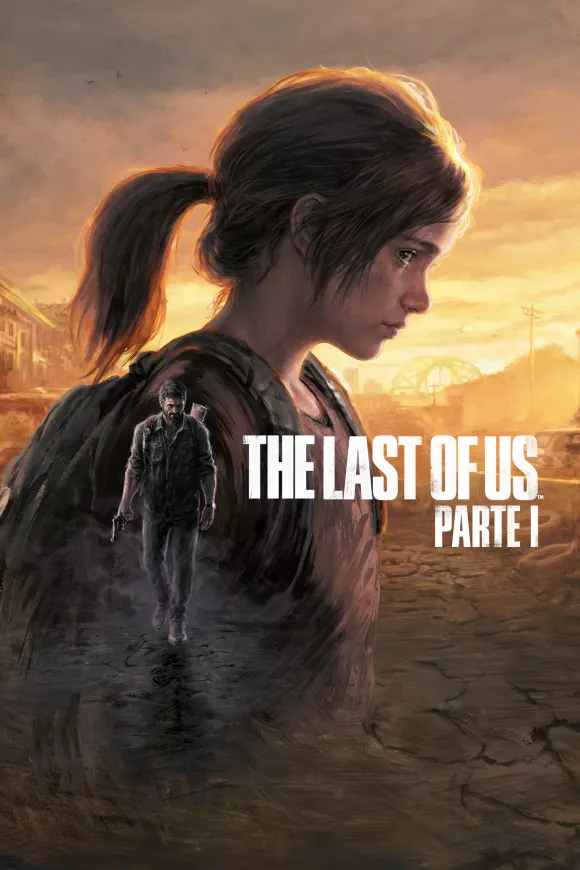

The Last of Us™ Part I
Experimenta la emocionante historia y los inolvidables personajes de The Last of Us, ganador de más de 200 premios Juego del Año. En una civilización devastada donde se enfrentan infectados e insensibilizados sobrevivientes, alguien contrata a Joel, el cansado protagonista, para que escabulla en secreto a Ellie, de 14 años, fuera de una zona militar de cuarentena. Sin embargo, lo que comienza como un pequeño trabajo, se convierte en un viaje brutal a través del país.
Days Gone
Ponte en los zapatos salpicados de barro del otrora forajido Deacon St. John, un motero cazarrecompensas que intenta buscar una razón por la que vivir en una tierra rodeada de muerte. Registra asentamientos abandonados en busca de equipamiento para crear armas y objetos valiosos o arriésgate a tratar con otros supervivientes que se ganan la vida a duras penas mediante intercambios justos u otros métodos más violentos.